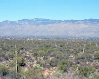
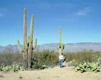
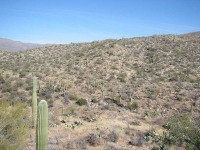
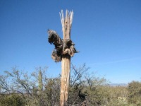

 |
街の際までサボテン地帯が迫っています。人間のたくましさを感じるところでもありました。 |
| Saguaroサボテンは本当にでかい。 |  |
| 今にも襲ってきそうな不気味なサボテン。 | |
| かわいらしいのもありました。花？ | |
 |
Saguaroサボテンの大地 |
| 枯れるとこのように繊維のみ残るようです。結構硬い繊維で骸骨のよう。 |  |
ツーソンの街外れにあるので、ツーソンに来たら寄るべき。街の中なので特に大げさな準備は要らない。自転車が多いので、注意して運転することが必要。サングラス必要。
Written : 2004.03.29